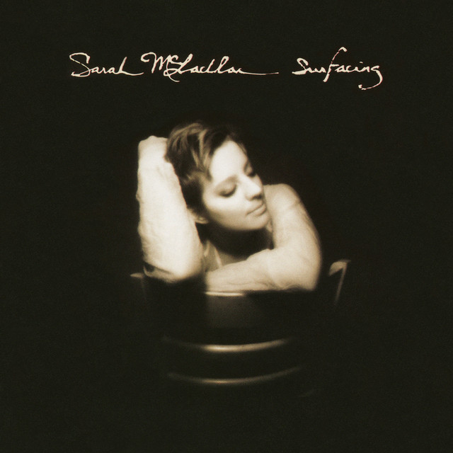

안녕하세요 라보엠입니다.
기분 좋은 주말 보내고 계신가요? 저는 어제 퇴근길 추천받은 사라 맥라클란 When she loved me 를 주말동안 계속 들으며 영혼의 안식을 얻고 있습니다. 오늘은 그녀의 또 다른 명곡 Angel 을 소개해드리려고 합니다.
이번 미국 대선에서 트럼프 대통령이 당신이 되었죠? 이번 미국 대선을 통해 알게된 것이 하나 있는데, 미국은 천사를 아직도 믿는 사람들이 많다는 겁니다. 그래서인지 영화 시티 오브 앤젤(1998)의 OST 로 수록된 사라 맥라클란의 Angel 은 많은 사랑을 받았고, 여전히 사람들이 즐겨 듣는 노래중 하나입니다.

Sarah McLachlan - "Angel"
"Angel"은 1997년 발매된 사라 맥라클란의 4집 앨범 "Surfacing"에 수록된 곡으로, 영화 시티 오브 엔젤(1998) OST를 통해 더 큰 대중적 인기를 얻게 되었습니다. 영화의 주제와 잘 어울리는 아름다운 멜로디와 가사로, 천사의 품 안에서 위로를 받는 듯한 느낌을 전달하고 있습니다. 이 노래는 당시 음악계에 만연했던 약물 문제 인한 비극적인 사건들에서 영감을 받아 탄생했습니다.
사라 맥라클란은 롤링스톤 매거진에서 읽은 기사를 통해 스매싱 펌프킨스의 키보디스트 조나단 멜보인(Jonathan Melvoin)이 1996년 약물 과다 복용으로 사망한 소식을 접했습니다. 그녀는 비록 직접 약물을 하지는 않았지만, 음악인들이 겪는 고독감과 압박감에 깊이 공감했고 이를 노래로 표현하고자 했습니다.
Angel 가사
1.
Spend all your time waiting
For that second chance
For a break that would make it okay
There's always some reason
To feel not good enough
And it's hard at the end of the day
I need some distraction
Oh a beautiful release
Memories seep from my veins
Let me be empty
Oh and weightless and maybe
I'll find some peace tonight
In the arms of the angel
Fly away from here
From this dark cold hotel room
And the endlessness that you fear
You are pulled from the wreckage
Of your silent reverie
You're in the arms of the angel
May you find some comfort here
2.
So tired of the straight line
And everywhere you turn
There's vultures and thieves at your back
And the storm keeps on twisting
You keep on building the lies
That you make up for all that you lack
It don't make no difference
Escaping one last time
It's easier to believe
In this sweet madness
Oh this glorious sadness
That brings me to my knees
In the arms of the angel
Fly away from here
From this dark cold hotel room
And the endlessness that you fear
You are pulled from the wreckage
Of your silent reverie
You're in the arms of the angel
May you find some comfort here
You're in the arms of the angel
May you find some comfort here
가사의 의미
"Angel"의 가사는 고통과 상실, 그리고 위안을 찾는 여정을 담고 있습니다. 여기서 '천사'는 이중적인 의미를 지닙니다. 한편으로는 고통받는 이들에게 위안을 주는 존재이지만, 다른 한편으로는 약물과 같은 위험한 도피처를 상징하기도 합니다.
In the arms of the angel
Fly away from here
From this dark cold hotel room
And the endlessness that you fear
이 구절은 현실의 고통에서 벗어나고 싶은 갈망을 표현하고 있습니다. '어두운 차가운 호텔 방'은 음악인들이 투어 중 겪는 고독과 소외감을 상징합니다.
노래의 영향력
"Angel"은 발매 이후 빌보드 차트에서 큰 성공을 거두었고, 그녀의 대표곡으로 자리잡았습니다. 그러나 이 노래의 진정한 의미는 많은 이들에게 위로와 힘이 되었다는 점에 있습니다. 특히 이 노래는 개인적인 상실이나 국가적 비극 등 다양한 상황에서 애도의 노래로 사용되었습니다. 9/11 테러 추모식이나 콜럼바인 고등학교 총기 사건 추모식 등에서 연주되었고, 많은 이들이 사랑하는 이의 장례식에서 이 노래를 사용하고 있습니다.
맺음말
사라 맥라클란의 "Angel"은 단순한 팝 송 이상의 의미를 지닌 노래입니다. 아름다운 멜로디 속에 담긴 깊은 공감과 위로의 메시지는 25년이 지난 지금까지도 많은 이들의 마음을 울리고 있습니다. 토이스토리의 When she loved me 나 이 노래를 통해 음악의 힘이 어떻게 우리의 삶을 위로하고 치유할 수 있는지를 강하게 느낄 수 있습니다.
사라 맥라클란의 영혼을 울리는 목소리와 함께 이번 주말을 보내시는건 어떨까요?
비가 오며 쌀쌀해지는데 감기 조심하세요.
연관 포스팅
When she loved me - 토이스토리 OST
안녕하세요 음악 분야 크리에이터 한스입니다. 오늘 퇴근길에 음악앱의 추천을 받은 노래를 소개해드리겠습니다. "When She Loved Me"는 1999년 개봉한 디즈니 픽사의 애니메이션 영화 '토이스토리 2'
umm.la-bohe.me